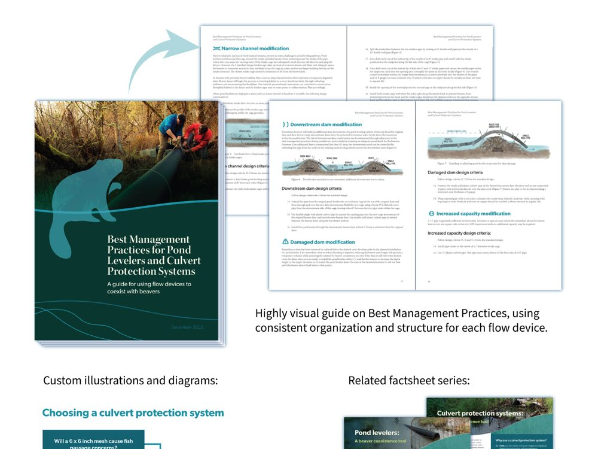
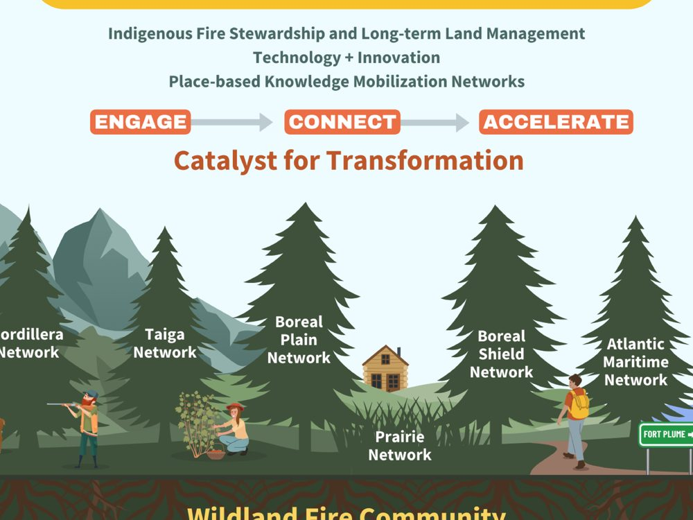
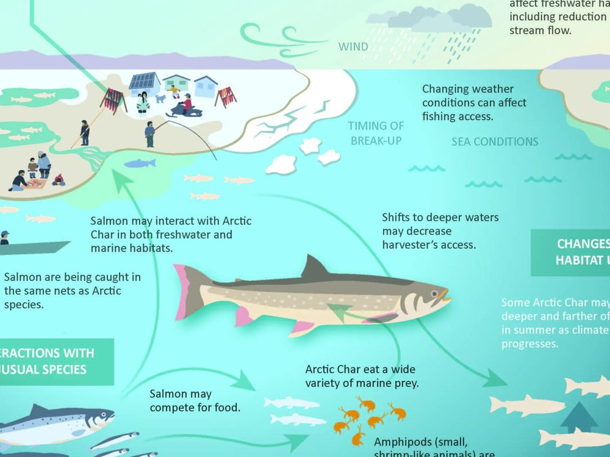
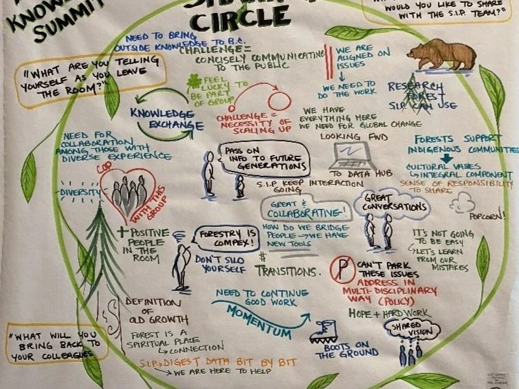
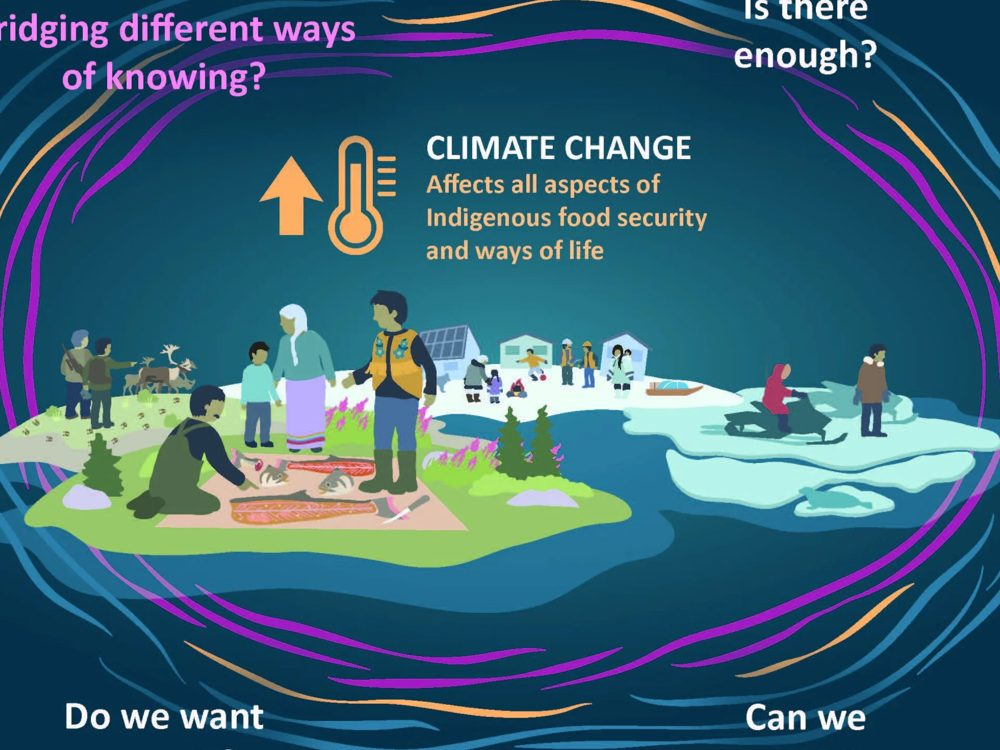

Science communication · Canada
Connecting knowledge to practice
We turn complex science into visuals, workshops and plain-language reports that people can act on.
Five ways we put science to work
Five domains, twenty-one services. Start with the one that sounds like your problem.

3 servicesKnowledge Synthesis
Scattered evidence, turned into something a decision-maker can act on.
Explore →
4 servicesStrategic Advising
Structure, plans and roadmaps, built with the people who will use them.
Explore →
4 servicesInfographic & Science Illustration
Complex science made visible: figures, illustrations, story maps.
Explore →
6 servicesWorkshops & Facilitation
Sessions that end with a decision, not just a discussion.
Explore →
4 servicesEducation & Science Outreach
Programs and materials that carry science to a wider audience.
Explore →Science, brought to life
At Fuse, we combine our backgrounds in science and our passion for creativity to bring knowledge to life.
We synthesize, translate and visualize the key message so leaders are empowered to make decisions that matter.
- ScienceEvery message rests on evidence.
- PassionCurious by nature, driven to understand.
- Values-basedWe work with the people who will use it.
- CreativityVisuals, media and process that people remember.
One piece, shown large

From a research program to one page people read
- 1The problemYears of restoration research on seismic lines, spread across reports few practitioners had time to read.
- 2What we didDistilled the goals, the treatments and the evidence into one illustrated page, drawn from the science.
- 3The resultA visual that land managers, industry and communities can use in the same meeting.
Organizations we work with


Curious by nature
We are curious by nature and driven to understand our clients and their objectives. Our origin story starts with four passionate University of Alberta science graduates, all convinced that connecting research to practice was possible.
- 2007The idea takes root
- EdmontonHead office
- BC · ONSatellite offices
We help empower leaders to make decisions that matter.
Tell us about the science you need people to act on.